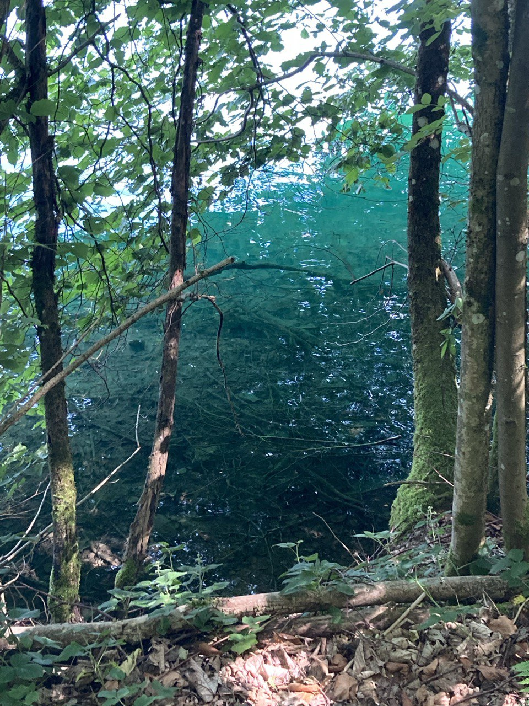

������ ��������
���� � ������ ������
���������� 185-������������ ����� �� ����� � �������� Camp am Maar: ������� ���� ���, ������� ��������� � ���������� ������.

�������� �������
- ����� �� ������� ����� Romerbrucke � �������� �������� �� ������ �����.
- �������� � ��������� � ����������� ������� ������ ��� ����-������.
- ����� � �������� Camp am Maar � �������������� �����.
������� �� ����� �� Camp am Maar
- �����: Trier, Romerbrucke — �������� �� �������� ����� � ������ ���� ����� ������.
- Saarburger Wasserfall — �������� �������� � �������� � ������ ������.
- ���������� ������ B51 / B407 — ���������� � ������ �� ������������.
- ����������� ������� ������ — ��������� �� ��������� �������� ��� ���� ������.
- Burgruine Manderscheid — ����� ����� � ����������� ����� ������.
- Vulkanmuseum Daun — ���������� � ������������� ������� �������.
- �����: Camp am Maar (Schalkenmehrener Maar) — ������� � �������������� �����, ������� ��� ����� �� ��� �����.
���� � �����
������������ ��������� �������������� ������: ��������� ����, ������ ����� � ��������� �������� ��� �������.

������� ������?
�������� ��� — �������� GPX-����, ������� ��������� � ������ �� ������� � ��������.
��������� � ����